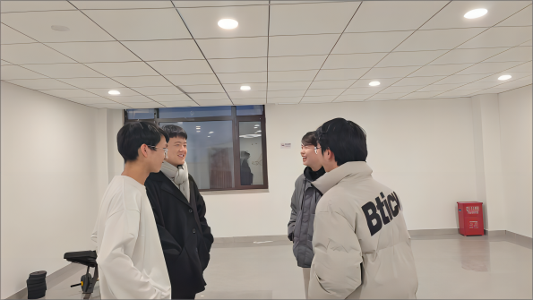
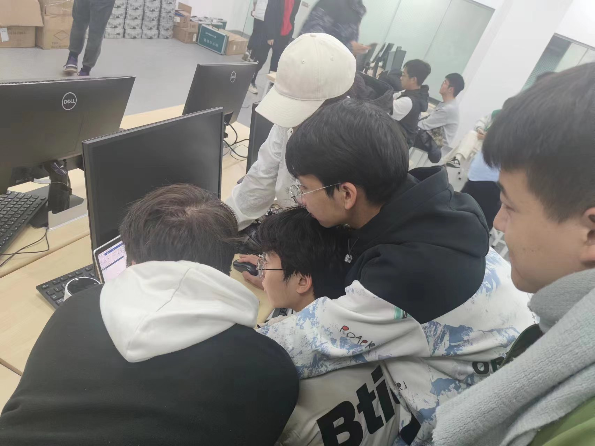
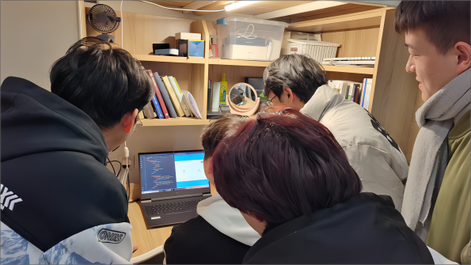

SAR图像变化检测
本项目采用Ms-CapsNet网络的高精度SAR图像变化检测算法,对同一地区不同时相
的两幅或多幅SAR图像进行分析,准确地检测出其中的变化部分和未变化部分。用户
可以快速、准确地进行SAR图像的变化检测,提高对地图变化的监测能力。我们的解
决方案不仅高效，而且易于使用，使用户能够轻松地访问和利用我们的服务。
项目成员：刘襄琪 马子淇 孟广樾 郭富豪 唐亚彤
特别鸣谢：高峰（课任老师） 刘文力（助教）
专业，我们是认真的！
SAFNet网络作为核心算法，结合多尺度卷积、多维主胶囊层和
多尺度特征提取的dropout机制,专注为您提供更高的精度和准确性。

站立会议
“每周日常”

修改Bug
“痛苦面具”

小组讨论
“制定计划”